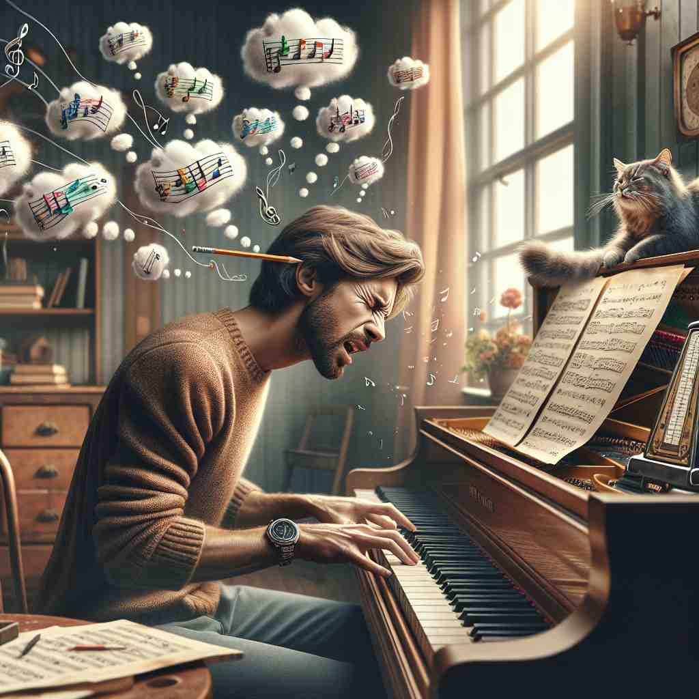
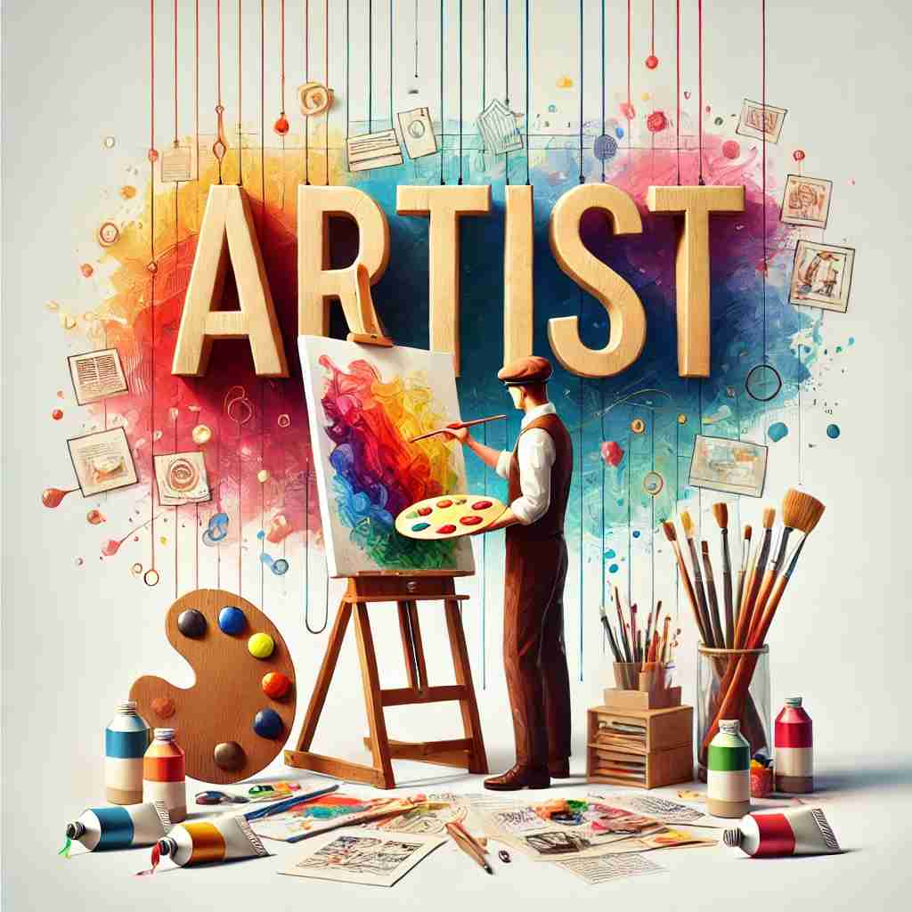

💬 She is a professional artist who loves to paint landscapes. 她是一位热爱绘制风景的专业艺术家。

💬 The artist at work is carefully shaping the marble statue. 艺术家在工作的过程中正小心翼翼地雕刻这尊大理石雕像。

💬 The young man is a talented music artist playing the piano. 这个年轻人是一位有才华的音乐艺术家，擅长弹钢琴。

💬 He is a talented artist who creates beautiful paintings. 他是一位才华横溢的艺术家，创作出美丽的画作。
🧠 想象一个人正在创作艺术品，这是'artist'的核心含义。从这个画面出发，我们可以看到艺术家在舞台上表演，在各个领域展现高超技艺，甚至巧妙地运用技巧欺骗他人。通过联想艺术创作的过程和所需的技能，你可以更容易理解和记住'artist'的各种含义。
🔈 ['ɑːtɪst]
🗝️ n. a person who creates works of art, especially paintings or drawings 创作艺术作品的人，特别是画画或素描的人。
🎭 在一个阳光明媚的工作室里，一位画家正站在画布前，手握画笔，专注地描绘一幅壮丽的山水画。阳光透过窗户洒在他的画上，流露出他对于艺术的热情和专注。
💬 Picasso was a famous artist who revolutionized modern art. 毕加索是一位著名的艺术家，他彻底改变了现代艺术。
🌳 由词根 "art"（艺术）加上表名词的后缀 "-ist" 组成，表示从事艺术工作的人，或拥有艺术技能的人，即 "艺术家"。
🕸️ 1. art: 艺术 2. artistic: 艺术的 3. artisan: 工匠
💡 记忆 "artist" 时，可以联想到 "art" 的创造者，通过艺术创作与表达其才能的人，即艺术家。